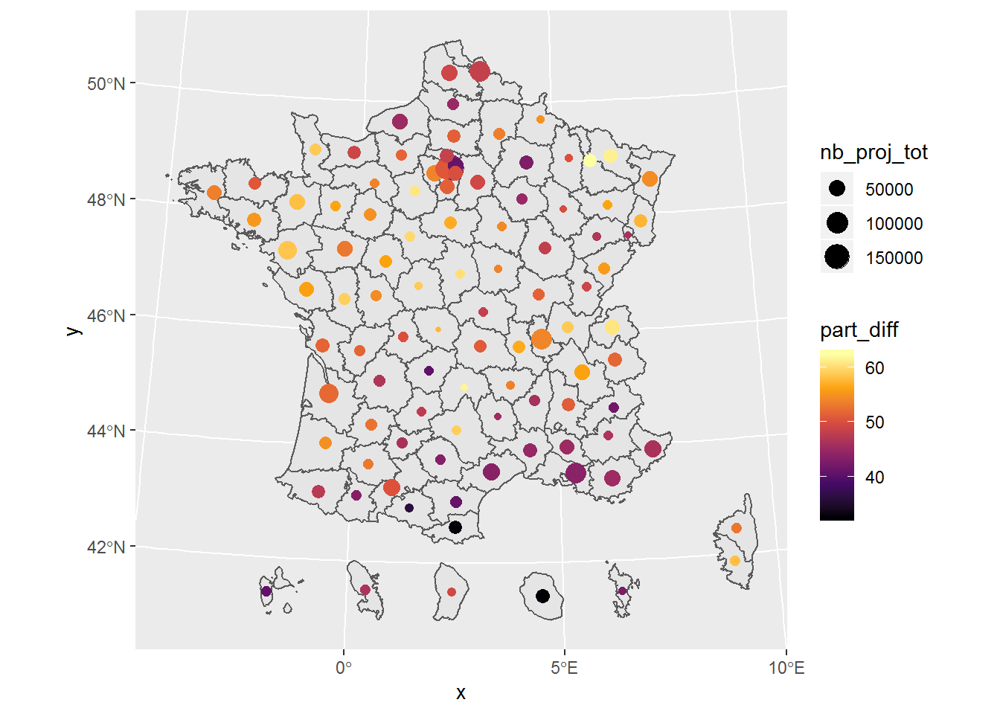
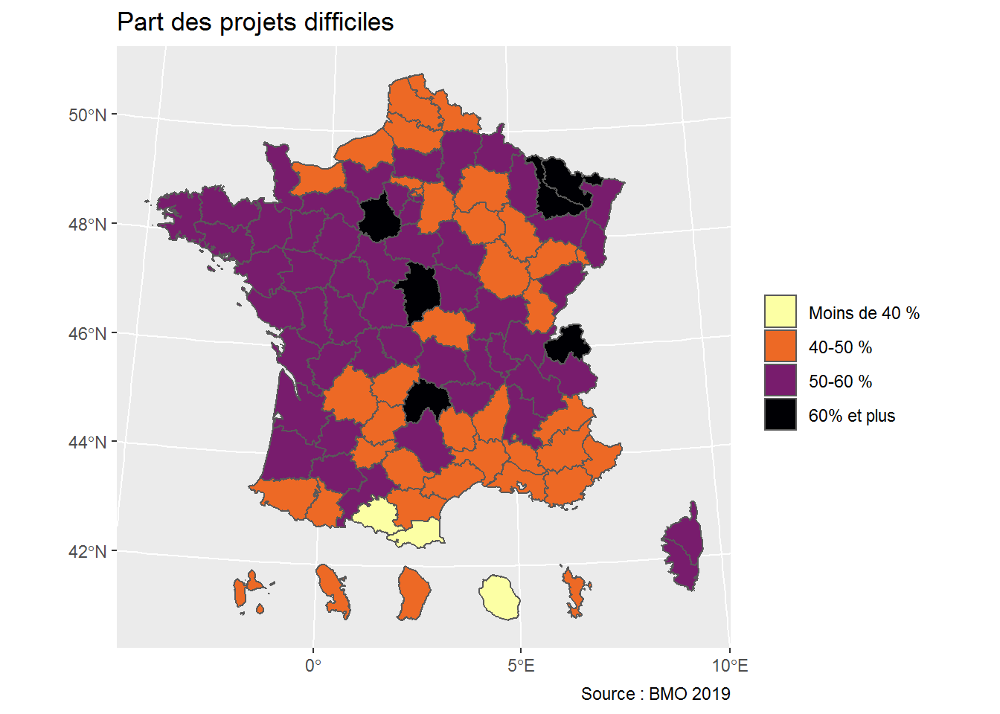

8 Personnaliser vos cartes
8.1 Les échelles
Les échelles se personnalisent avec une fonction du type scale_xxx_type() où
xxxest correspond à la modalité d’affichage de notre variable dansaes()(par exemplefill,color,size) ;typeau type de l’échelle (discrète, continue, manuelle, en gradient, etc.).
Une échelle correspond toujours à une variable déclarée dans aes().
On peut déclarer le nom de la légende avec name =. D’autres paramètres s’ajoutent en fonction de l’échelle. Vous pouvez en savoir plus ici : https://ggplot2.tidyverse.org/reference/index.html#section-scales
8.1.1 Echelles de couleur continues
Pour les variables continues, on privilégiera scale_xxx_gradient(), qui affiche un gradient de couleur où on lui donne la couleur basse et haute.
ggplot() +
geom_sf(data = bmo_dep_shp,
aes(fill = part_diff)) +
scale_fill_gradient(name = "Difficulté de recrutement",
low = "white",
high = "red")
Dans le cas où on a deux gammes de valeurs, par exemple négatives et positives, on peut utiliser scale_xxx_gradient2() qui comprend un paramètre mid, pour la valeur du milieu.
8.1.2 Echelles de couleur manuelles
Pour les échelles discrètes, il peut être intéressant de préciser manuellement les couleurs que l’on souhaite voir apparaître, soit avec leur nom, soit avec leur code (https://www.colorhexa.com/).
On utilise alors scale_xxx_manual().
Par exemple ici sur le remplissage des zones :
ggplot() +
geom_sf(data = bmo_dep_shp,
aes(fill = part_diff_classes)) +
scale_fill_manual(name = "Difficulté de recrutement",
values = c("red", "blue", "green", "yellow"))
Ou pour la couleur de points :
ggplot(data = bmo_dep_shp) +
geom_sf() +
stat_sf_coordinates(aes(size = nb_proj_tot,
color = part_diff_classes)) +
scale_color_manual(name = "Difficulté de recrutement",
values = c("#db4545", "#c72626", "#9d1e1e", "#721616"))
8.1.3 Echelles de couleur existantes
Un certain nombre d’échelles de couleurs sont déjà inclus dans le package.
On peut particulièrement recommander les palettes issues de viridis, qui sont spécialement pensées pour être adaptées aux personnes souffrant de déficience visuelle. Elles peuvent avoir des difficultées à distinguer certaines couleurs ou différences de couleurs. Plus d’informations : https://ggplot2.tidyverse.org/reference/scale_viridis.html
On s’y réfère par scale_xxx_viridis_d() pour les palettes discrètes et scale_xxx_viridis_c() pour les palettes continues.
On peut aussi régler le sens de la palette avec direction.
ggplot() +
geom_sf(data = bmo_dep_shp,
aes(fill = part_diff_classes)) +
scale_fill_viridis_d(direction = -1)
ggplot(data = bmo_dep_shp) +
geom_sf() +
stat_sf_coordinates(aes(size = nb_proj_tot,
color = part_diff)) +
scale_color_viridis_c(option = "inferno")
8.1.4 Autres échelles
On utilisera aussi scale pour régler les autres paramètres, par exemple la taille des points, ici en précisant une rangée de valeurs (range =), ce qui augmente l’écart entre la taille des points.
ggplot(data = bmo_dep_shp) +
geom_sf() +
stat_sf_coordinates(aes(size = nb_proj_tot),
shape = 22,
fill = "red") +
scale_size_continuous(name = "Nombre de projets",
range = c(1, 10))
Le même principe peut s’appliquer aux autres paramètres passés dans aes().
8.2 Titre et légende
La fonction labs() permet d’ajouter un titre et une légende.
ggplot() +
geom_sf(data = bmo_dep_shp,
aes(fill = part_diff_classes)) +
scale_fill_viridis_d(name = "",
option = "inferno",
direction = -1) +
labs(title = "Part des projets difficiles",
caption = "Source : BMO 2019")
8.3 Le thème
La thème (theme()) contient tous les éléments de personnalisation de votre graphique. Il y en a beaucoup et vous pouvez pousser très loin : https://ggplot2.tidyverse.org/reference/theme.html.
On se contentera ici d’appliquer un thème prédéfini : theme_void(), qui retire le fond gris et les axes.
ggplot() +
geom_sf(data = bmo_dep_shp,
aes(fill = part_diff_classes)) +
scale_fill_viridis_d(name = "",
option = "inferno",
direction = -1) +
labs(title = "Part des projets difficiles",
caption = "Source : BMO 2019") +
theme_void()
Notre carte a maintenant son aspect définitif.